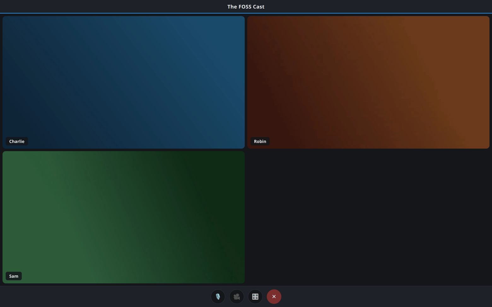
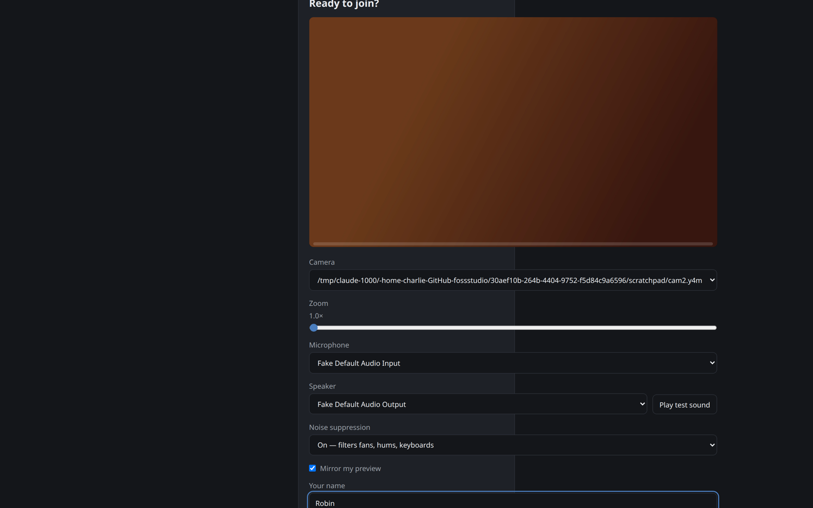
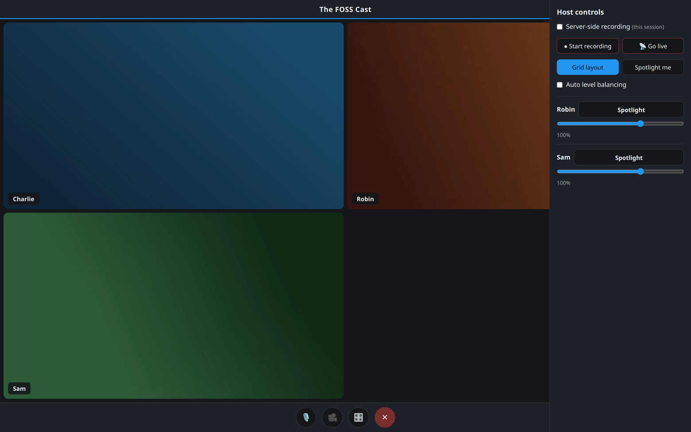
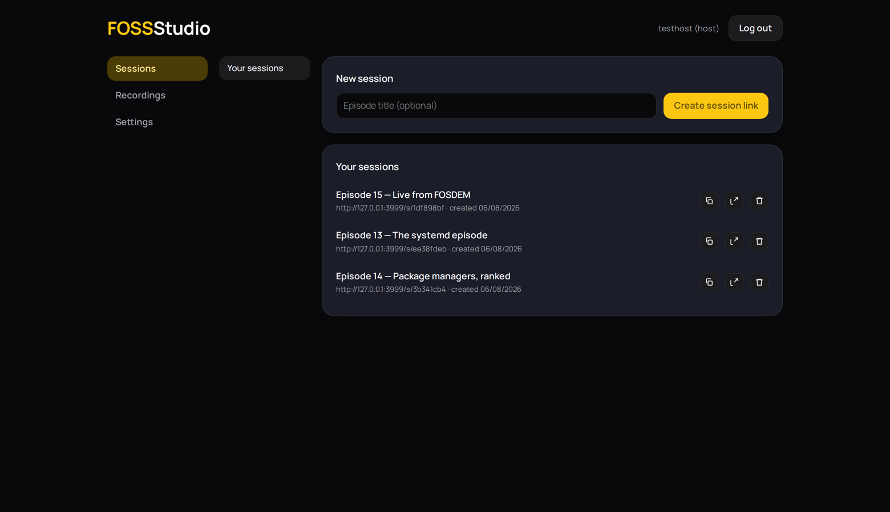
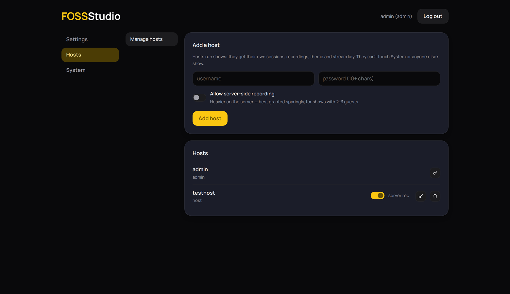

The video podcast studio you run on your own server. Guests click a link and they're in — no accounts, no cloud, no subscription.
Get the code Self-host it
Send one link. Your guest picks their camera, microphone and speaker, hears a test sound, watches their mic level bounce, zooms their camera if they like — then clicks join.


A slide-in panel only the host sees: start the recording, go live to YouTube, spotlight a speaker, balance quiet and loud voices, and set each guest's volume for everyone at once.
Sessions, recordings, branding, stream keys, backups — everything is a button. The server looks after HTTPS certificates, daily backups and health checks itself.


An admin account creates hosts; every host gets their own sessions, recordings, banner, wallpaper and YouTube stream key. Two shows can record at the same time without ever seeing each other.
Browser-side per-person capture in raw PCM, converted to FLAC on the server. Big sessions don't strain the box.
Server-composited 720p grid over RTMP. The grid rebuilds itself when someone joins or leaves.
A forwarding media engine (mediasoup) means a 2-core VPS handles a full grid comfortably.
Flat JSON files in one folder. Back it up, export it as a zip, restore it with a click.
No CDNs, no trackers, no cookies for guests, no external calls. Even the font is self-hosted.
A built-in TURN relay gets guests through corporate and mobile networks.
The dashboard is a PWA with push notifications — know when a guest arrives or a recording is ready.
Daily backups with tested restore, uptime alerts by email, rollback deploys, and a plain-language runbook.
You need a small Linux server (2 cores, 4 GB RAM is plenty) and a domain pointed at it. Then:
git clone https://github.com/fosscharlie/fossstudio
cd fossstudio
cp .env.example .env # fill in your domain and secrets
docker compose up -d --buildHTTPS certificates, the TURN relay and the media engine all come up together. Full detail in the README.